WORKSHOP
WEBGIS NA PRÁTICA
DO QGIS AO GEOPORTAL
Vagas limitadas para interação ao vivo
O passo a passo definitivo para você transformar camadas do QGIS em um Geoportal funcional e interativo.
Aprenda a estruturar seus dados, configurar servidores de mapas e publicar sua primeira plataforma WebGIS do zero, de forma prática e profissional.